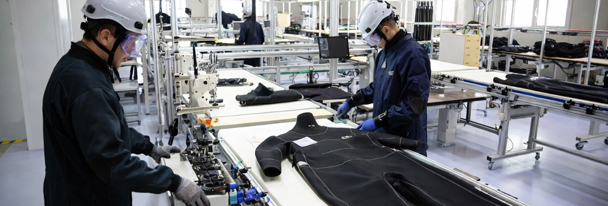

제조기술
MANUFACTURING TECHNOLOGY


사용 환경을 고려한
드라이슈트 제조
사용 목적과 체형, 필요한 기능을 살펴 제작 사양을 검토합니다.
설계부터 제작과 품질 확인까지, 각 단계의 요구사항을 제품에 반영합니다.

드라이슈트 제작 과정
-
01
요구사항 검토와 설계
사용 목적 확인 · 치수 확인 · 제작 사양 협의
-
02
제작과 마감
사양에 따른 제작 · 부위별 마감 · 접합부 확인
-
03
품질 확인과 사용 안내
제품 상태 확인 · 사용·관리 안내 · 수선 상담